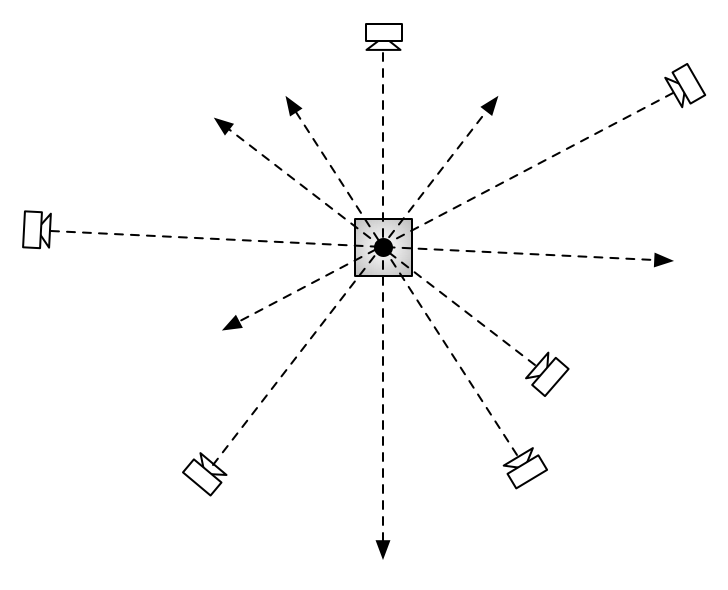

Discovery and localisation of points of interest
Finding Social Points of Interest from Georeferenced and Oriented Online Photographs
B. Thomee, I. Arapakis, and D. A. Shamma
Abstract - Points of interest are an important requirement for location-based services, yet they are editorially curated and maintained, either professionally or through community. Beyond the laborious manual annotation task, further complications arise as points of interest may appear, relocate, or disappear over time, and may be relevant only to specific communities. To assist, complement, or even replace manual annotation, we propose a novel method for the automatic localization of points of interest depicted in photos taken by people across the world. Our technique exploits the geographic coordinates and the compass direction supplied by modern cameras, while accounting for possible measurement errors due to the variability in accuracy of the sensors that produced them. We statistically demonstrate that our method significantly outperforms techniques from the research literature on the task of estimating the geographic coordinates and geographic footprints of points of interest in various cities, even when photos are involved in the estimation process that do not show the point of interest at all.
10.1145/2854004
PDF
Points of interest; location estimation; georeferenced photos; oriented photos; line of sight; field of view; GPS; compass; sensor accuracy; photo composition
{kind=link}

{kind=link}
{kind=link}
Estimating the location of a POI by intersecting the lines of sight from multi- ple cameras. This can be done accurately when the camera position and orientation measurements are precise and the POI is framed in the center of each photo (a), but it cannot be done accurately otherwise (a).